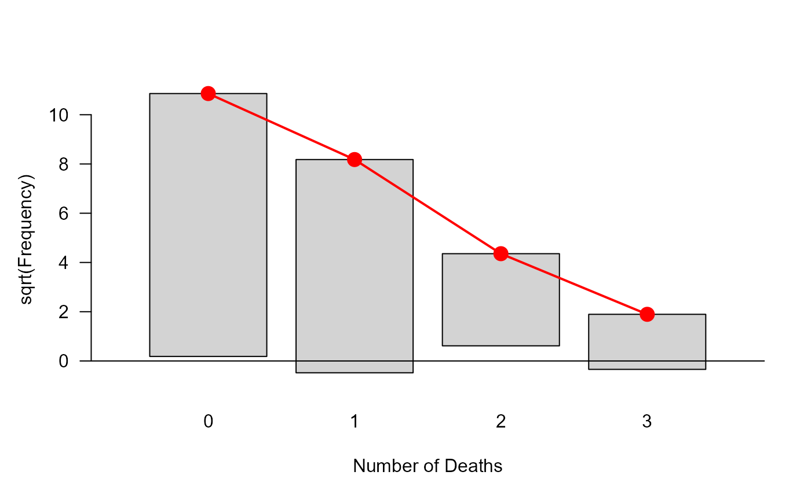
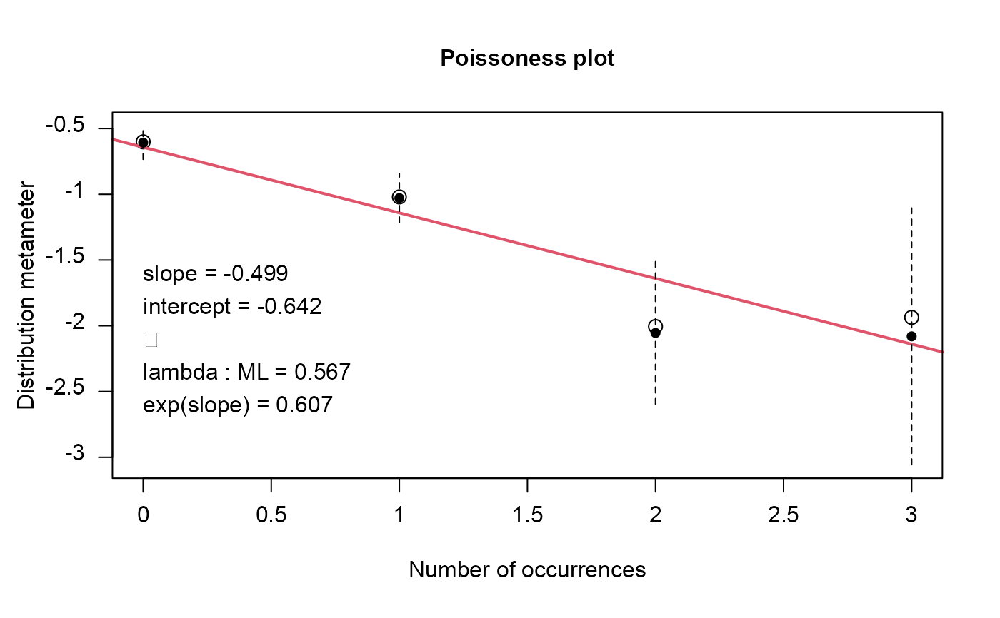

A data frame containing the number of deaths of cyclists in London from 2005 through 2012 in each fortnightly period. Aberdein & Spiegelhalter (2013) discuss these data in relation to the observation that six cyclists died in London between Nov. 5 and Nov. 13, 2013.
Format
A data frame with 208 observations on the following 2 variables.
datea Date
deathsnumber of deaths, a numeric vector
Source
https://www.data.gov.uk/dataset/cb7ae6f0-4be6-4935-9277-47e5ce24a11f/road-accidents-safety-data,
STATS 19 data, 2005-2012, using the files Casualty0512.csv and
Accidents0512.csv
References
Aberdein, Jody and Spiegelhalter, David (2013). Have London's roads become more dangerous for cyclists? Significance, 10(6), 46–48.
Examples
data(CyclingDeaths)
plot(deaths ~ date, data=CyclingDeaths,
type="h",
lwd=3,
ylab="Number of deaths",
axes=FALSE)
axis(1, at=seq(as.Date('2005-01-01'),
by='years',
length.out=9),
labels=2005:2013)
axis(2, at=0:3)
# make a one-way frequency table
CyclingDeaths.tab <- table(CyclingDeaths$deaths)
gf <- goodfit(CyclingDeaths.tab)
gf
#>
#> Observed and fitted values for poisson distribution
#> with parameters estimated by `ML'
#>
#> count observed fitted pearson residual
#> 0 114 117.946412 -0.3633792
#> 1 75 66.911907 0.9887681
#> 2 14 18.979820 -1.1430562
#> 3 5 3.589133 0.4108395
summary(gf)
#>
#> Goodness-of-fit test for poisson distribution
#>
#> X^2 df P(> X^2)
#> Likelihood Ratio 4.151738 2 0.1254474
rootogram(gf, xlab="Number of Deaths")

distplot(CyclingDeaths.tab)

# prob of 6 or more deaths in one fortnight
lambda <- gf$par$lambda
ppois(5, lambda, lower.tail=FALSE)
#> [1] 2.854305e-05